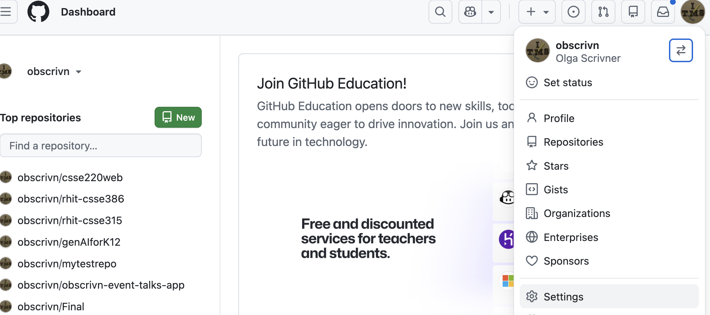
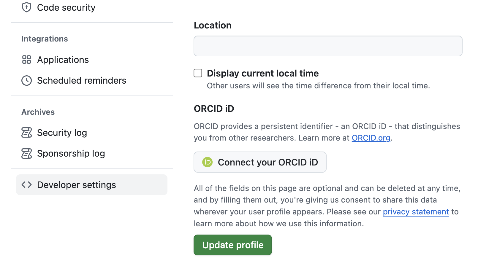
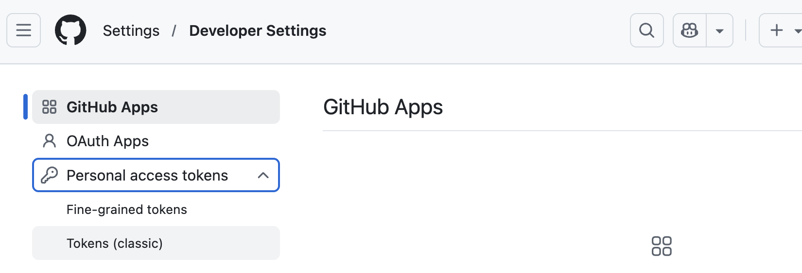
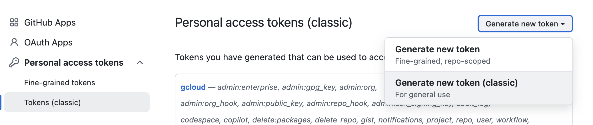
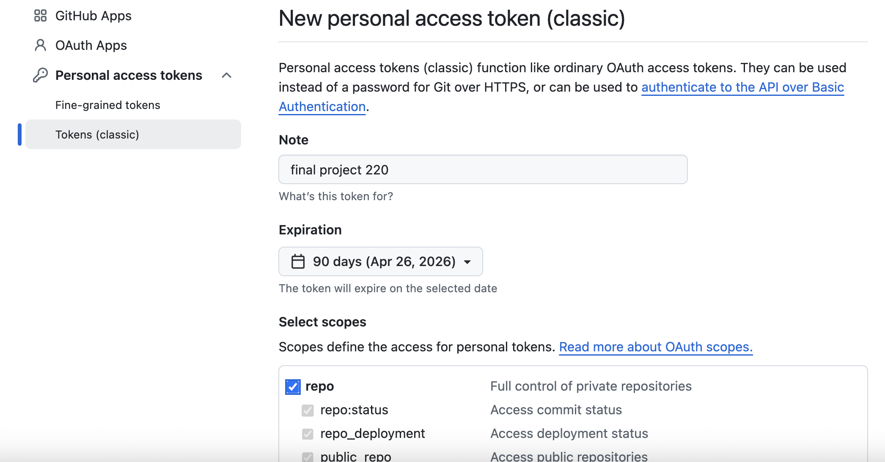
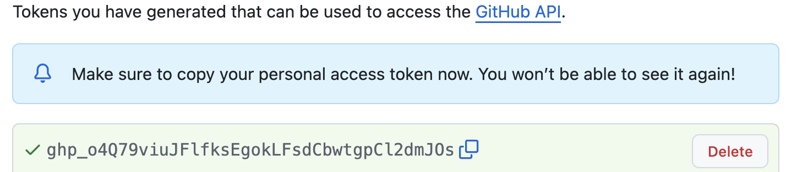

Everyone: Install Git on your computer
Follow Card 1
Everyone: Sign in to GitHub and create a Classic Personal Access Token (PAT)
Follow Card 2
Team Captain only: Create the team repository from the starter and add team members
Follow Card 3
All team members: Clone the team repository into Eclipse
Follow Card 4
Everyone: Learn how to use Git inside Eclipse (branches, commits, pushes, pulls, merges)
Follow Card 5
Do not skip ahead. Each step assumes the previous one is completed.
Card 1: Install Git (Windows)
You do not need to use Bash or the command line for this course.
Git just needs to be available so Eclipse can use it.
Step 1: Check if Git already works in Eclipse
In Eclipse, open: Window → Show View → Other → Git → Git Repositories
If the Git Repositories view opens, you are done. Do not install anything.
Step 2: Install Git (only if the check failed)
Install Git for Windows:
https://git-scm.com/download/win
On that page, click
“Click here to download the latest x64 version of Git for Windows.”
Accept the default settings during installation.
Restart Eclipse after installing Git.
In Eclipse, open: Window → Show View → Other → Git → Git Repositories
If the Git Repositories view opens, you are done.
Do not install additional Git plugins.
Card 2: Create a Git Token (PAT)
Go to GitHub → Settings (Fig.1)
Open Developer settings (Fig.2)
Select Personal access tokens → Tokens (classic)(Fig.3)
Select Generate new token -> Generate new token (classic) (Fig.4)
Name it something like CSSE220-Final (Fig.5)
Select scope: repo only
Set an expiration (90 days is fine)
Click Generate token
Copy the token and save it somewhere safe (Fig.6)
You will not be able to see this token again after leaving the page.
Treat it like a password.

Fig.1 GitHub Settings

Fig.2 Developer settings

Fig.3 Personal access tokens → Tokens (classic)

Fig.4 Generate a Classic token

Fig.5 Name, expiration, and repo scope

Fig.6 Copy personal access tokenCard 3: Cloning Game Template Repo (Captain only)
Only the team captain does this step first. This creates your team’s GitHub repository
using our official starter template.